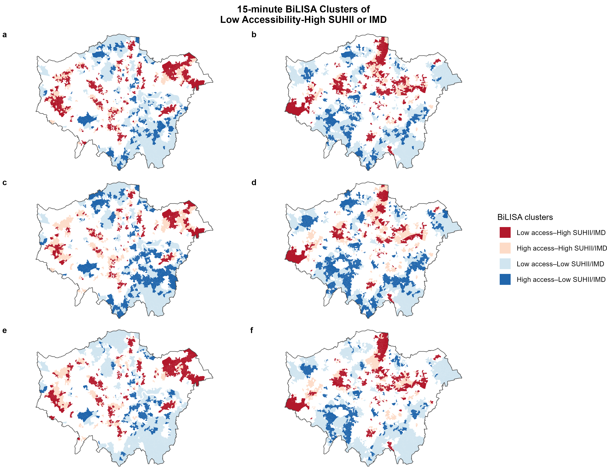
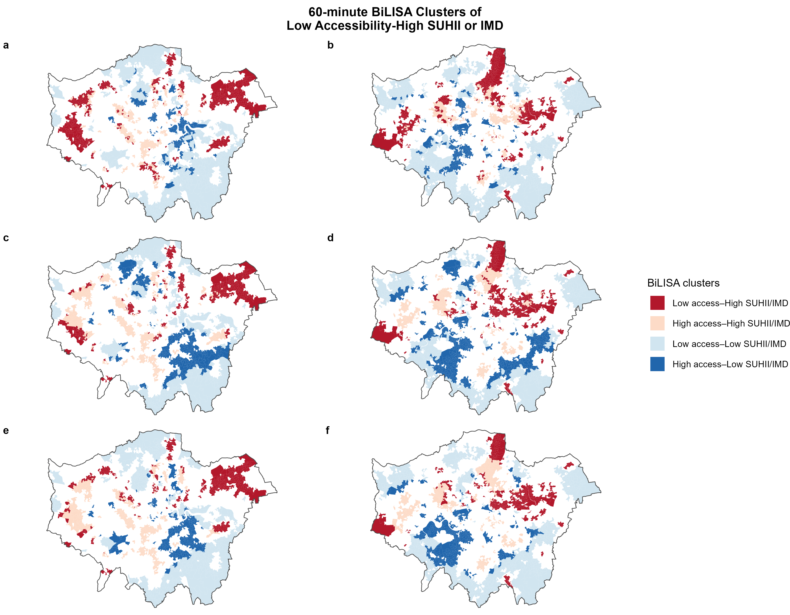

Appendix D BiLISA Spatial Clustering
| Variables Combination | High-High | High-Low | Low-High | Low-Low | Not significant |
|---|---|---|---|---|---|
| 15-minute PT and SUHII | 348 (7.0%) | 257 (5.1%) | 597 (12.0%) | 617 (12.4%) | 3,175 (63.6%) |
| 15-minute PT and IMD | 328 (6.6%) | 384 (7.7%) | 558 (11.2%) | 731 (14.6%) | 2,993 (59.9%) |
| 15-minute Walking and SUHII | 576 (11.5%) | 452 (9.1%) | 369 (7.4%) | 422 (8.5%) | 3,175 (63.6%) |
| 15-minute Walking and IMD | 536 (10.7%) | 643 (12.9%) | 350 (7.0%) | 472 (9.5%) | 2,993 (59.9%) |
| 15-minute Cycling and SUHII | 385 (7.7%) | 250 (5.0%) | 560 (11.2%) | 624 (12.5%) | 3,175 (63.6%) |
| 15-minute Cycling and IMD | 400 (8.0%) | 368 (7.4%) | 486 (9.7%) | 747 (15.0%) | 2,993 (59.9%) |
| 60-minute PT and SUHII | 421 (8.4%) | 261 (5.2%) | 524 (10.5%) | 613 (12.3%) | 3,175 (63.6%) |
| 60-minute PT and IMD | 402 (8.0%) | 291 (5.8%) | 484 (9.7%) | 824 (16.5%) | 2,993 (59.9%) |
| 60-minute Walking and SUHII | 543 (10.9%) | 345 (6.9%) | 402 (8.0%) | 529 (10.6%) | 3,175 (63.6%) |
| 60-minute Walking and IMD | 358 (7.2%) | 561 (11.2%) | 528 (10.6%) | 554 (11.1%) | 2,993 (59.9%) |
| 60-minute Cycling and SUHII | 547 (11.0%) | 297 (5.9%) | 398 (8.0%) | 577 (11.6%) | 3,175 (63.6%) |
| 60-minute Cycling and IMD | 410 (8.2%) | 427 (8.6%) | 476 (9.5%) | 688 (13.8%) | 2,993 (59.9%) |

Figure 6.2: Spatial distribution of 15-minute BiLISA Low accessibility - High SUHII or IMD clusters as follows: (a) Low PT accessibility and High SUHII, (b) Low PT accessibility and High IMD, (c) Low walking accessibility and High SUHII, (d) Low walking accessibility and High IMD, (e) Low cycling accessibility and High SUHII, (f) Low cycling accessibility and High SUHII.

Figure 6.3: Spatial distribution of 60-minute BiLISA Low accessibility - High SUHII or IMD clusters as follows: (a) Low PT accessibility and High SUHII, (b) Low PT accessibility and High IMD, (c) Low walking accessibility and High SUHII, (d) Low walking accessibility and High IMD, (e) Low cycling accessibility and High SUHII, (f) Low cycling accessibility and High SUHII.